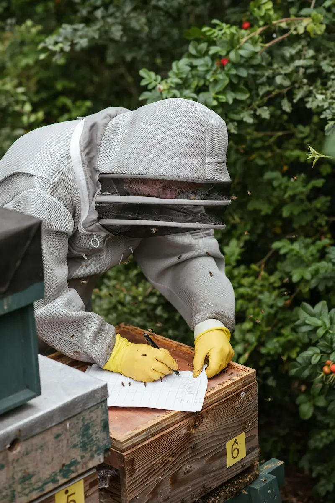

Hive Management and Beekeeping Inspections in the UK
Last updated: 1 May 2026
Good hive management is mostly about paying attention. By carrying out regular beekeeping inspections, you build up a picture of how each colony develops through the year, how strong it is, how healthy it looks and when it might need help. This guide explains what hive management means in practice, how to inspect a hive step by step and how your approach changes across the UK season. It also acts as a practical bridge between routine inspections, spotting brood problems early and using the right bee disease pages when something does not look right.
The advice here is written for mixed experience beekeepers – from newer keepers who want a clear structure for inspections, through to improvers who want to tighten up their hive management and record keeping. If you want a more detailed frame-by-frame walkthrough, see Step-by-Step Inspections. If your inspections raise questions about queen cells, swarming or unusual brood patterns, it is worth exploring the Swarm & Queen section alongside this guide. If you are trying to work out whether a pattern looks like disease, stress or a management issue, also use the colony health triage tool and Bee Health Checker.
What Hive Management Really Means
New beekeepers sometimes imagine hive management is all about doing things to bees – feeding, treating, requeening, moving hives. In reality, most of the work is observation and small adjustments. The bees do the heavy lifting; the beekeeper's job is to give them a suitable home, understand what is happening inside and step in when needed. That includes noticing early signs of disease, stress, queen problems and poor brood patterns before they become bigger problems.
Good hive management usually aims to:
- Keep colonies healthy and strong.
- Reduce the risk of disease spreading between hives.
- Spot brood, queen and colony-health problems early.
- Provide enough space at the right time.
- Manage queen quality and swarming so colonies remain workable and safe.
- Protect bees from starvation, robbing and weather extremes.
Most of these decisions are informed by what you see during beekeeping inspections. The next sections focus on how to make those inspections effective and bee friendly, and how to turn what you see into practical next steps.
Before You Inspect – Pre Inspection Checks
A calm, efficient inspection starts before you crack the first propolis seal. Running through the same quick checks each time makes hive management feel more predictable and less stressful, and helps reduce the chance of missing early warning signs or spreading problems between hives.
- Weather: aim for dry, fairly calm conditions with a temperature warm enough for bees to fly (often 14°C or above).
- Time of day: mid morning to mid afternoon on a good day is often ideal. Avoid very late evenings and cold, dull windows.
- Equipment: clean hive tool, lit smoker, fuel, spare box or nuc if you might need it, queen marking kit if appropriate. Clean equipment matters, especially if you are inspecting multiple colonies or checking a hive that looks suspect.
- Protective clothing: bee suit or jacket, veil and gloves in good condition.
- Records: inspection sheet, notebook or digital tool such as the HiveTag web app ready to use.
When Not to Inspect a Hive
It is usually best to delay a routine inspection when:
- Weather is very poor – heavy rain, strong cold wind, sleet or very low temperatures.
- It is nearly dark, or the temperature will drop quickly while the hive is open.
- There is a strong nectar dearth and many bees are robbing – opening hives can trigger fights and store losses.
- You are not able to inspect safely – for example, if you do not have adequate clothing or you are unwell.
The exception is when you have a clear welfare concern – signs of starvation, severe queenlessness or disease. In those cases, a brief, targeted inspection may still be necessary despite imperfect conditions. The key is to inspect for a specific reason rather than opening the hive just to have a look.
How to Inspect a Hive – Step by Step (UK Focus)

This walkthrough describes a typical full inspection of a single brood box colony. You can adapt it for double brood, nucs or different hive patterns, but the principles are the same.
- Approach the hive calmly. Stand to the side or back of the hive, not directly in front of the entrance. Watch the bees for a few moments to get a feel for their activity and mood.
- Give a small puff of smoke at the entrance. Use cool smoke. The aim is not to fill the hive, but to encourage bees to move down slightly.
- Remove the roof and crownboard. Lift the roof off and set it down safely. Crack any propolis seals, give a small puff of smoke under the crownboard, wait a few seconds, then gently remove it.
- Check the top of the frames. Note how many frames are covered with bees. Look for burr comb or brace comb that might need tidying.
- Create space if needed. In a crowded hive, remove one outside frame, inspect it and place it temporarily in a spare box or frame holder. This gives you room to work through the brood nest.
- Inspect each frame in turn. Lift frames slowly, keeping them over the hive. Rotate or tilt to see the brood clearly in good light. Check both sides before moving on.
- Look for eggs, brood pattern and queen signs. Eggs show a queen has been present recently. A solid pattern of brood at different stages is usually a good sign. Note queen cells, play cups or charged cells. If you are unsure whether the queen is present, or you cannot find her, read what to do if you cannot find the queen.
- Check for disease indicators. Watch for irregular brood patterns, sunken or perforated cappings, discoloured larvae, unusual smells, crawling bees or obvious pest pressure. If you suspect disease, refer to the Bee Diseases and Pests hub, use the colony health triage tool if you need help narrowing symptoms down, and follow official guidance.
- Assess stores and space. Note how many frames contain honey and pollen, how heavy they feel and whether the colony is short of food or restricted for laying space.
- Reassemble the hive carefully. Return frames in order, close up the brood box, replace the crownboard and roof and ensure the hive is weather tight.
- Record your findings. Write brief notes while they are fresh. Over time, these records become one of your most valuable hive management tools.
The same basic structure underpins many inspection checklists, including digital tools like the HiveTag web app, which lets you record inspections against individual hives and apiaries. Good notes are especially useful when you are comparing brood patterns, tracking disease concerns or trying to decide whether a problem is improving or getting worse.
Reading Brood Frames, Bee Behaviour and Queen Status
Over time, hive management becomes less about ticking boxes and more about reading what the bees are telling you. This is where inspections become especially valuable for spotting problems early. The following clues are especially useful.
- Brood pattern: a compact area of brood with few empty cells often suggests a well mated, productive queen. Scattered brood, many empty cells or multiple eggs per cell may indicate problems. If you want a deeper visual explanation, use the brood pattern guide.
- Distribution of brood stages: seeing eggs, very young larvae, older larvae and sealed brood in the same area usually means the queen has been laying steadily.
- Presence of queen cells: location and number matter. Queen cells on the bottom or sides of frames can suggest swarming preparation; emergency cells may appear mid frame after queen loss. If you are unsure what type of cells you are seeing or what they mean, refer to the queen cell identification guide and follow up with what to do if you find queen cells.
- Temperament and behaviour: bees that are calm on the comb, do not run excessively and are not overly defensive are easier to work and often reflect a stable queen situation.
- Smell and sound: many experienced beekeepers learn to notice when a hive "sounds wrong" – a higher pitched roar can signal queenlessness or stress. If you suspect a problem, read queenless or supersedure to help interpret what you are seeing.
For more on recognising disease and brood issues, see the dedicated Bee Diseases and Pests pages and the linked guides on bacterial diseases, viral diseases, parasitic mites and other conditions.
Space, Comb and Stores Management
Hive management also involves looking beyond the brood nest to the physical structure of the hive.
Comb Management
- Replace very dark, misshapen or damaged comb gradually to reduce disease build up and improve brood rearing conditions.
- Use a planned comb rotation system so that old frames are cycled out over a few seasons.
- Refer to the Hygiene page for more on cleaning and comb change, especially where old comb may be contributing to brood problems or disease pressure.
Space and Swarm Management
- Ensure the queen has sufficient laying space, especially in spring build up. If colonies are becoming congested or producing queen cells, review swarm prevention and compare options in split methods. Overcrowding can push colonies towards swarming.
- Add supers or additional brood space when appropriate, based on colony strength and nectar availability.
- Link your inspection findings with the Year in the Apiary page to time swarm control checks effectively.
Food Stores
- In early spring, watch for starvation risk. Even strong colonies can run out of food quickly in poor weather.
- In autumn, ensure colonies have adequate winter stores before reducing inspections.
- Inspections should balance checking stores with avoiding unnecessary disturbance in cold conditions.
- If a colony looks weak, patchy or slow to build, remember that poor nutrition can sometimes mimic disease or make underlying problems worse.
Seasonal Hive Management Overview (UK Conditions)
The details differ between regions and forage types, but many UK beekeepers recognise a similar seasonal rhythm. This is a high level overview – the Year in the Apiary page breaks the year down month by month. Thinking seasonally also helps you understand when inspections are most useful for swarm control, disease detection and stores management.
Spring – Build Up and Risk of Starvation
Monitor food carefully as brood rearing ramps up. Increase inspections as weather improves, check brood pattern, look for early signs of swarming and ensure the queen has space to lay. Spring is also one of the best times to spot brood problems early.
Summer – Swarm Control and Honey Production
At the peak of the season, focus on swarm control, supering and monitoring for any signs of disease or stress. Inspections may be more frequent while colonies are at full strength. If queen cells are appearing or colonies are preparing to swarm, use the Swarm & Queen section to guide your decisions.
Autumn – Feeding and Health Checks
As brood rearing declines, ensure colonies have adequate stores, carry out health checks and apply varroa management according to current guidance. Reduce unnecessary disturbance as temperatures fall. This is also an important point for reviewing whether late-season brood, adult bee condition and mite pressure suggest deeper health issues.
Winter – Protection and Observation
In winter, hive management is mostly about protection from weather and pests, monitoring weight and watching flight activity on milder days. Internal inspections are kept to a minimum unless there is a specific concern.
For more detail on managing varroa through the year, see the dedicated Varroa Management page. If inspections reveal unusual brood or adult bee symptoms, the Bee Diseases and Pests hub and Bee Health Checker are the best next stops.
Hive Management – Frequently Asked Questions
Many UK beekeepers aim for inspections every 7–10 days during spring and early summer, when colonies are building quickly and swarming is most likely. In late summer and autumn, inspections often become less frequent and more targeted.
In most cases, no. Winter checks usually involve monitoring weight, looking at entrance activity and checking for damage or water ingress. Only open a hive in winter if there is a strong reason and the conditions are suitable.
Date, hive identity, queen status, brood and stores, temperament, any queen cells or disease concerns and actions taken are a solid minimum. Additional notes on weather or forage can also be helpful for future reference.
Regular inspections help you notice changes in brood pattern, smell, pest activity or bee behaviour that may indicate disease. Combined with good hygiene and up-to-date guidance from official sources, they are a key part of disease control. If you are unsure what you are seeing, use the Bee Health Checker or colony health triage tool.
Some beekeepers work with minimal smoke in very calm conditions, but a properly used smoker is a valuable safety tool. The aim is cool, light smoke used sparingly, not to smoke the bees heavily.
Check weather, nectar flow and your own handling first. If the colony is consistently aggressive in good conditions with gentle handling, requeening may be appropriate. Seek advice from an experienced beekeeper or association before taking irreversible steps.
No. Seeing eggs and a good brood pattern can be enough to confirm queen presence. Marking the queen when you do see her can make later inspections easier, but is not mandatory at every visit.
There is no single rule, but most routine inspections aim to be thorough yet efficient. Taking 10–30 minutes for a full check of a strong colony is common; in colder or marginal conditions, focus on the essentials and work more quickly.
Take clear photos if safe, make detailed notes and seek help from a mentor, local association or bee inspector if disease is suspected. You can also use the brood pattern guide, Bee Health Checker and colony health triage tool to narrow things down more confidently.
Yes. Apps and web tools such as the HiveTag web app make it easier to log inspections, track trends and link hive performance to forage and weather. They do not replace good beekeeping, but they can support it.